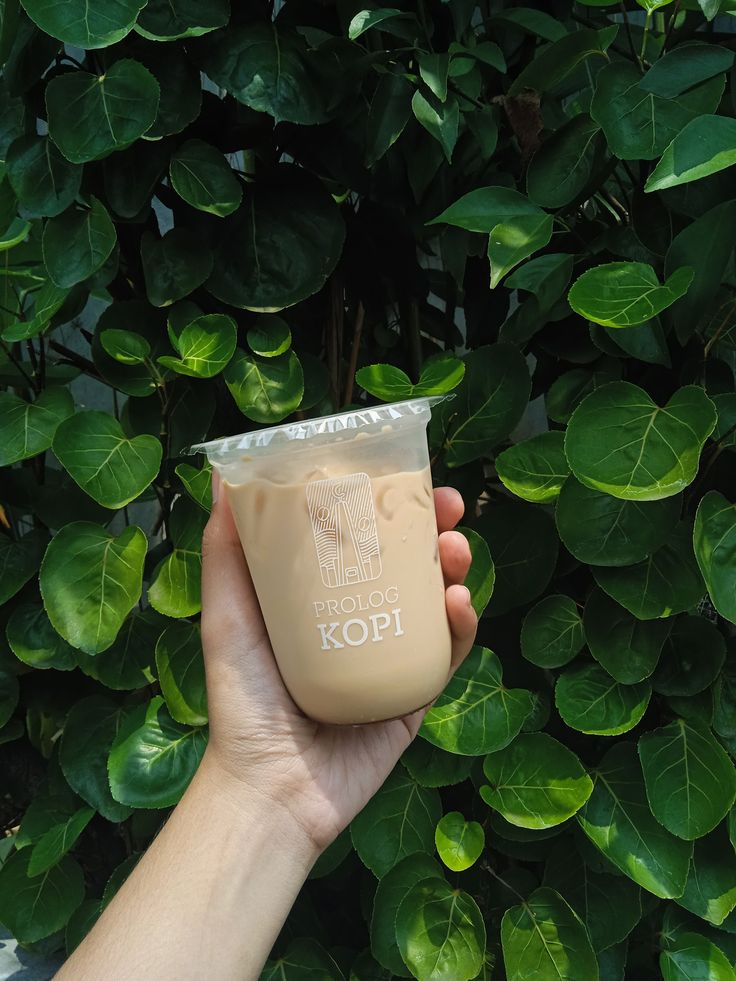

Affordable Price
Kopi kekinian dengan harga ringan untuk rutinitas harian.
About Prolog Kopi
Tempat pulang untuk pecinta kopi lokal, pencari sudut nyaman, dan siapa pun yang percaya ngopi enak tidak harus mahal.
Who We Are
Prolog Kopi hadir sejak 2022 berawal dari keresahan tentang mahalnya harga kopi kekinian. Kami percaya semua orang berhak menikmati kopi berkualitas tanpa harus menguras dompet. Karena itu, Prolog Kopi hadir membawa konsep coffee shop affordable dengan rasa premium dan suasana nyaman untuk semua kalangan.

Our Vision
Why Prolog Kopi?
Kopi kekinian dengan harga ringan untuk rutinitas harian.
Takaran pas, rasa konsisten, dan tetap satisfying sampai tegukan terakhir.
Kami meracik menu yang nyaman dinikmati hari ini dan tetap relevan besok.
Rasa approachable untuk mahasiswa, pekerja, keluarga, dan komunitas lokal.
Contact
WhatsApp6281234567890
Open Daily07.00 - 22.00 WIB
LocationJl. Kumbang No.12, Bogor Tengah, Kota Bogor, Jawa Barat